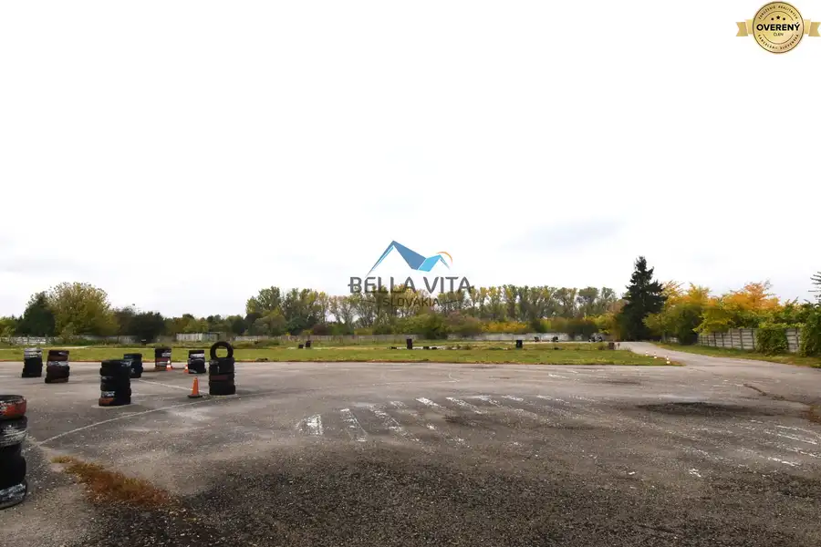
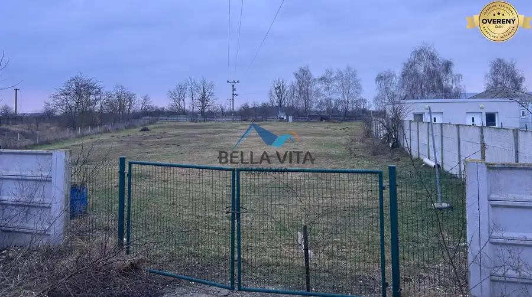
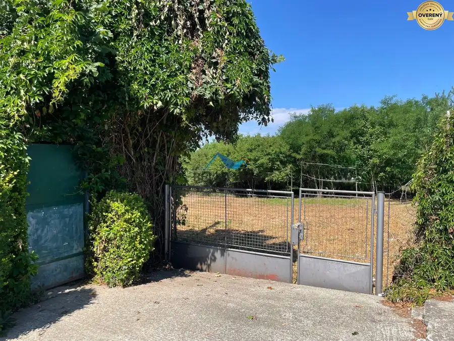

Pokojná záhradka s chatkou a ovocnými stromami v Šali
Šaľa
- Plocha326 m²
- Poschodie0.
- Stavpôvodný
- Vlastníctvoosobné
O nehnuteľnosti
Predstavujeme vám jedinečnú príležitosť na kúpu záhradky v malebnej lokalite Čerešňový sad v Šali. Táto záhradka s rozlohou 326 m2 je ideálnym miestom pre tých, ktorí hľadajú únik od mestského ruchu a túžia po pokojnom mieste na relaxáciu a oddych.
Záhradka je starostlivo udržiavaná, s krásne pokoseným trávnikom a mladými ovocnými stromčekmi, medzi ktoré patria slivka, marhuľa a broskyňa. Okrem toho tu nájdete aj drobné bobuľoviny, ktoré potešia každého milovníka čerstvého ovocia.
Na pozemku sa nachádza murovaná chatka, ktorá ponúka priestor pre malú kuchynku a útulnú izbu. Z terasy chatky sa naskytá nádherný výhľad na celú záhradku, čo je ideálne miesto na rannú kávu alebo večerné posedenie. Za chatkou je pripravený priestor na grilovanie, kde môžete tráviť príjemné chvíle s rodinou a priateľmi.
Prístup do záhrady je zabezpečený cez hlavnú spoločnú bránu a následne cez peknú kovanú bránu, ktorá dodáva celému miestu šarm a eleganciu. Elektrina je už zavedená, čo umožňuje pohodlné využívanie chatky a záhrady.
Táto záhradka ponúka možnosť rozdeliť ju na relaxačnú a úžitkovú časť, čo umožňuje maximálne využitie priestoru podľa vašich potrieb a predstáv. Aj keď na pozemku nie je zavedená voda, plyn ani kanalizácia, jeho potenciál je obrovský a ponúka množstvo možností na zveľadenie.
Záhradka sa nachádza v pokojnej oblasti s neupravenou prístupovou cestou, čo prispieva k jej autentickému vidieckemu charakteru. Je to ideálne miesto pre tých, ktorí chcú uniknúť z mesta a užívať si prírodu v jej najčistejšej podobe.
Cena tejto nehnuteľnosti je 54 900€, čo z nej robí atraktívnu investíciu do budúcnosti. Ak hľadáte miesto, kde môžete relaxovať, pestovať vlastné ovocie a zeleninu, alebo jednoducho tráviť čas v prírode, táto záhradka je pre vás tou správnou voľbou. Neváhajte nás kontaktovať pre viac informácií alebo dohodnutie obhliadky.
Parametre
| Rozloha pozemku | 326 m² |
|---|---|
| Poschodie | prízemie |
| Vlastníctvo | osobné |
| Stav | pôvodný |
| Voda | nie |
| El. napätie | 230V |
| Plyn | nie |
| Kanalizácia | nie |
| Terén | rovina |
| Prístupová cesta | neupravená cesta |
| Dátum zverejnenia | 23. 5. 2026 |
Kde to je
Mohlo by Vás zaujímať

Pozemok9 414 200 €Investičný pozemok v Galante, časť Nebojsa Galanta 10355 m² Ponúkame na predaj atraktívny komerčný pozemok v meste Galanta, časť Nebojsa, s celkovou výmerou 10 355 m². Pozemok je rovinatý, dobre prístupný a…
Pozemok 194 800 €Investičný pozemok na predaj, Galanta Galanta 2435 m² Ponúkame na predaj pozemok v meste Galanta o výmere 2435 m². Druh pozemku: zastavaná plocha a nádvorie Celková výmera: 2435 m² Cena: 80€ / m² Pozemok…
Pozemok10 136 485 €POZEMOK URČENÝ ÚZEMNÝM PLÁNOM NA individuálnu bytovú výstavbu -UPI Šaľa 1011 m² Ponúkame na predaj atraktívny stavebný pozemok nachádzajúci sa v obľúbenej časti Šaľa – Veča, na Nitrianskej ceste neďaleko Tesca . Pozemok má výmeru…